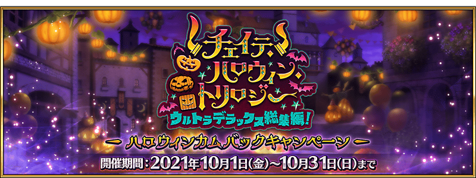
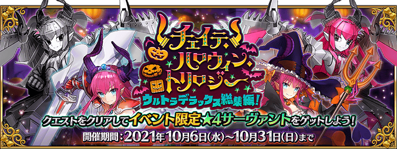
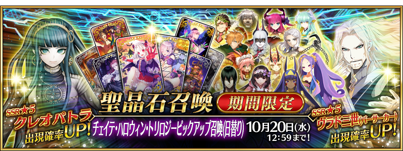

萬聖節再臨迦勒底！
決定在2021年10月舉辦新萬聖節活動！
並且，在此之前預定從2021年10月6日(三) 17:00舉辦回顧2015年～2017年萬聖節活動的活動「恰赫季斯・萬聖節・三部曲 超豪華總集篇！」！
此為以回顧過去舉辦的萬聖節活動故事回顧文字冒險部份中心的活動。
為了記念舉辦如此的10月萬聖節活動，舉辦「萬聖節回歸宣傳活動」！
本宣傳活動，配合萬聖節活動的新情報公開，將陸續追加新情報追加！
隨著接近萬聖節的熱鬧氣氛，別忘記確認本宣傳活動！
◆宣傳活動舉辦期間◆
2021年10月1日(五) 17:00～10月31日(日) 22:59
◆萬聖節回歸宣傳活動最新情報◆
▶萬聖節回歸宣傳活動第1彈情報NEW!
◆有關從者真名的注意◆
在2018年12月31日(二) 23:00以後新配信的主線故事及期間限定活動、一部份關卡、宣傳活動及召喚中，會顯示隱藏真名的對象從者真名。
※2018年12月31日(一) 22:59前已經配信的主線故事、復刻活動、一部份關卡中不在此限。

【10月4日(一) 17:00追記】
預定從2021年10月6日(三) 17:00舉辦回顧2015年～2017年萬聖節活動的活動「恰赫季斯・萬聖節・三部曲 超豪華總集篇！」！
活動的詳情請確認此處。
◆活動舉辦期間◆
2021年10月6日(三) 17:00(預定)～10月31日(日) 11:59
◆關於「恰赫季斯・萬聖節・三部曲 超豪華總集篇！」◆
・「恰赫季斯・萬聖節・三部曲 超豪華總集篇」是為了預定舉辦的新萬聖節活動，回顧過去舉辦的萬聖節活動故事回顧文字冒險部份中心的活動。請注意沒有反覆挑戰關卡收集道具，交換活動道具等的要素。
・「恰赫季斯・萬聖節・三部曲 超豪華總集篇！」中，只要推進文字冒險部份，就可獲得過去萬聖節活動加入的以下活動限定從者。 ・★4(SR)伊莉莎白・巴托里〔萬聖節〕 ・★4(SR)伊莉莎白・巴托里〔Brave〕 ・★4(SR)機械伊莉醬 或 ★4(SR)機械伊莉醬Ⅱ號機 ※「★4(SR)機械伊莉醬」「★4(SR)機械伊莉醬Ⅱ號機」只可獲得其中1位。
・「恰赫季斯・萬聖節・三部曲 超豪華總集篇！」中可加入的活動限定從者寶具強化用卡面與從者硬幣，預定可在後日舉辦的新萬聖節活動獲得。 ※只限過去舉辦的萬聖節活動或「恰赫季斯・萬聖節・三部曲 超豪華總集篇！」中正式加入的活動限定從者才能獲得。
下述的期間中，在進行強化「恰赫季斯・萬聖節・三部曲 超豪華總集篇！」關聯從者時，大成功(經驗值2倍加成)・極大成功(經驗值3倍加成)的發生率以期間限定變成2倍！
務必藉此機會強化對象從者吧！
◆舉辦期間◆
2021年10月1日(五) 17:00～10月15日(五) 11:59
◆對象從者◆
| 職階 | 稀有度 | 從者名 |
|---|---|---|
| Saber | ★★★★ | 伊莉莎白・巴托里〔Brave〕 |
| ★★★★ | 齊格飛 | |
| ★★★★ | 蘭斯洛特 | |
| ★★★ | 蓋烏斯・尤利烏斯・凱撒 | |
| Archer | ★★★★ | 崔斯坦 |
| ★★★ | 羅賓漢 | |
| Lancer | ★★★★★ | 玉藻前 |
| ★★★★ | 弗拉德三世〔EXTRA〕 | |
| ★★★★ | 伊莉莎白・巴托里 | |
| ★★★★ | 清姬 | |
| Rider | ★★★★★ | 奧茲曼迪亞斯 |
| Caster | ★★★★★ | 玉藻前 |
| ★★★★ | 伊莉莎白・巴托里〔萬聖節〕 | |
| ★★★★ | 尼托克里絲 | |
| Assassin | ★★★★★ | 刑部姬 |
| ★★★★★ | 克麗奧佩脫拉 | |
| ★★★★ | 燕青(新宿的Assassin) | |
| ★★★★ | 卡米拉 | |
| ★★★★ | 武則天(不夜城的Assassin) | |
| ★★★ | 靜謐的哈桑 | |
| ★ | 瑪塔・哈里 | |
| Berserker | ★★★★★ | 弗拉德三世 |
| ★★★★★ | 源賴光 | |
| ★★★★ | 茨木童子 | |
| ★★★★ | 玉藻貓 | |
| ★★★★ | 彭忒西勒亞 (黃金國的Berserker) |
|
| ★★★ | 清姬 | |
| Alterego | ★★★★ | 機械伊莉醬 |
| ★★★★ | 機械伊莉醬Ⅱ號機 |
下述的期間中，在「恰赫季斯・萬聖節・三部曲 超豪華總集篇！」關聯從者的強化關卡中消耗AP變成1/2！(就算在戰鬥中撤退的情況，也會是同様的消耗量)
藉此機會通過尚未通過的從者強化關卡吧！
◆舉辦期間◆
2021年10月1日(五) 17:00～10月15日(五) 11:59
◆對象從者◆
| 職階 | 稀有度 | 從者名 |
|---|---|---|
| Saber | ★★★★ | 齊格飛 |
| ★★★ | 蓋烏斯・尤利烏斯・凱撒 | |
| Archer | ★★★★ | 崔斯坦 |
| ★★★ | 羅賓漢 | |
| Lancer | ★★★★ | 伊莉莎白・巴托里 |
| Rider | ★★★★★ | 奧茲曼迪亞斯 |
| Caster | ★★★★★ | 玉藻前 |
| ★★★★ | 尼托克里絲 | |
| Assassin | ★★★★★ | 刑部姬 |
| ★★★★ | 燕青(新宿的Assassin) | |
| ★★★★ | 卡米拉 | |
| ★★★★ | 武則天(不夜城的Assassin) | |
| ★★★ | 靜謐的哈桑 | |
| ★ | 瑪塔・哈里 | |
| Berserker | ★★★★★ | 弗拉德三世 |
| ★★★★★ | 源賴光 | |
| ★★★★ | 茨木童子 | |
| ★★★★ | 玉藻貓 | |
| ★★★ | 清姬 |

下述的期間中，在關卡開始時的支援選擇畫面，選擇其他御主的對象從者做支援情況、其他御主選擇自己的對象從者做支援情況的友情點數獲得量變成2倍。
藉此機會入手更多友情點數吧！
◆舉辦期間◆
2021年10月1日(五) 17:00～10月15日(五) 11:59
※非好友的御主也是友情點數獲得量2倍的對象。 ※請注意GUEST從者即使是對象從者也在友情點數獲得量2倍的對象外。
◆對象從者◆
| 職階 | 稀有度 | 從者名 |
|---|---|---|
| Saber | ★★★★ | 伊莉莎白・巴托里〔Brave〕 |
| ★★★★ | 齊格飛 | |
| ★★★★ | 蘭斯洛特 | |
| ★★★ | 蓋烏斯・尤利烏斯・凱撒 | |
| Archer | ★★★★ | 崔斯坦 |
| ★★★ | 羅賓漢 | |
| Lancer | ★★★★★ | 玉藻前 |
| ★★★★ | 弗拉德三世〔EXTRA〕 | |
| ★★★★ | 伊莉莎白・巴托里 | |
| ★★★★ | 清姬 | |
| Rider | ★★★★★ | 奧茲曼迪亞斯 |
| Caster | ★★★★★ | 玉藻前 |
| ★★★★ | 伊莉莎白・巴托里〔萬聖節〕 | |
| ★★★★ | 尼托克里絲 | |
| Assassin | ★★★★★ | 刑部姬 |
| ★★★★★ | 克麗奧佩脫拉 | |
| ★★★★ | 燕青(新宿的Assassin) | |
| ★★★★ | 卡米拉 | |
| ★★★★ | 武則天(不夜城的Assassin) | |
| ★★★ | 靜謐的哈桑 | |
| ★ | 瑪塔・哈里 | |
| Berserker | ★★★★★ | 弗拉德三世 |
| ★★★★★ | 源賴光 | |
| ★★★★ | 茨木童子 | |
| ★★★★ | 玉藻貓 | |
| ★★★★ | 彭忒西勒亞 (黃金國的Berserker) |
|
| ★★★ | 清姬 | |
| Alterego | ★★★★ | 機械伊莉醬 |
| ★★★★ | 機械伊莉醬Ⅱ號機 |

在LINE官方帳號贈送「伊莉莎白・巴托里〔萬聖節〕」的LINE聊天 背景！
向LINE官方帳號登錄好友，在聊天畫面輸入「背景」後就可下載，敬請使用。
◆配發期間◆
2021年10月1日(五) 17:00～11月1日(一) 16:59
◆LINE官方帳號◆
https://lin.ee/mrhIao8
◆領取方法◆
①請掃描上述LINE官方帳號的URL或右邊QR碼，登錄好友。
②請在LINE官方帳號的聊天畫面輸入「背景」。
③將顯示LINE聊天 背景，請下載後使用。
※在2021年10月1日(五) 17:00時間點，下降的LINE聊天 背景設計，可從各聊天的「其他設定」⇒「背景」⇒「選擇圖片」設定。關於設定方法可能因LINE版本更新而有所變更，屆時請確認LINE的幫助。 ※根據使用裝置可能LINE聊天 背景的圖片尺寸與畫面不一致。
【10月4日(一) 17:00追記】
其他還有，
・恰赫季斯・萬聖節・三部曲 超豪華總集篇！
・恰赫季斯・萬聖節・三部曲Pick Up召喚(每日交替)
預定以期間限定舉辦！
關於詳情，請自下述橫幅確認。
■「恰赫季斯・萬聖節・三部曲Pick Up召喚(每日交替)」詳細情報 